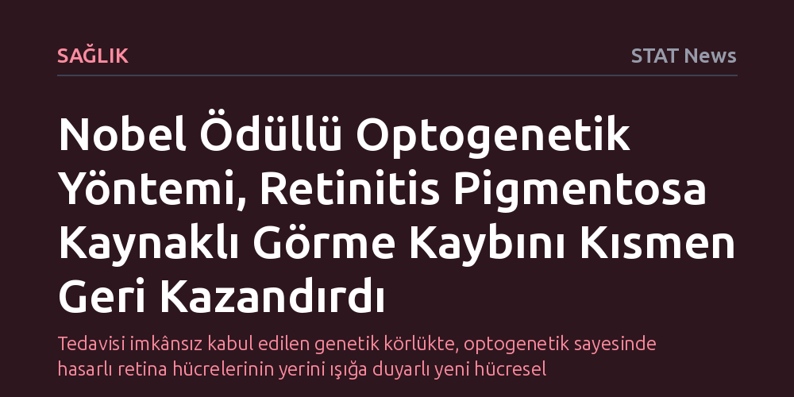

SAGLIK · STAT News · 2026-10-08
Küçük bir klinik çalışma, Nobel ödüllü optogenetik tedavisinin retinitis pigmentosa kaynaklı görme kaybını kısmen geri kazandırabildiğini gösterdi. Bulgular, kesin tedavisi bulunmayan bu kalıtsal körlük türünde geniş bir hasta grubu için yeni bir umut vadediyor.
Tedavisi imkânsız kabul edilen genetik körlükte, optogenetik sayesinde hasarlı retina hücrelerinin yerini ışığa duyarlı yeni hücresel mekanizmaların alabileceğini kanıtlıyor.

Retinitis pigmentosa, retina tabakasında ışığı algılamakla görevli fotoreseptör hücrelerinin aşamalı olarak bozulmasına ve ölmesine yol açan kalıtsal bir hastalıktır. Çoğunlukla çocuklukta veya erken ergenlik çağında teşhis edilen rahatsızlık, ilk evrelerde gece körlüğü ve periferik görüşün daralmasıyla başlar. Süreç ilerledikçe görme alanı kademeli olarak kapanır ve hastalar genç yetişkinlik evresine ulaştıklarında çoğunlukla yasal olarak kör kabul edilecek düzeye gelir.
Günümüzde belirli bir genetik mutasyonu taşıyan sınırlı bir hasta grubuna yönelik gen terapileri haricinde, hastalığı bütünüyle iyileştiren bir tedavi bulunmamaktadır. Mevcut yaklaşımlar yalnızca doku kaybını yavaşlatmaya ve kalan görme kırıntılarını korumaya odaklanabilmektedir. Ancak New England Journal of Medicine'da yayımlanan yeni bir araştırma, optogenetik teknolojisinin bu tıbbi çaresizliği kırma potansiyeli taşıdığını ortaya koydu.
Nobel Ödülü ile tescillenen optogenetik teknolojisi, ışığa duyarlı protein genlerinin hedeflenen hücrelere aktarılarak bu hücrelerin harici ışık uyarılarıyla yönlendirilmesi ilkesine dayanır. Retinitis pigmentosada ışığı algılayan ana hücreler yok olsa bile, retinadaki diğer sinir hücreleri büyük ölçüde canlılığını korur. Optogenetik yaklaşım, geride kalan bu sağlam hücreleri ışığa duyarlı hale getirerek gözün beyne yeniden görsel sinyal iletmesini amaçlar.
Yayımlanan küçük ölçekli klinik çalışmada araştırmacılar, bu yöntemin insanlardaki güvenliğini ve klinik uygulanabilirliğini değerlendirdi. İlk klinik sonuçlar, uygulanan optogenetik müdahalenin hastaların daha önce yitirdiği görme yetisinin bir bölümünü geri getirmeyi başardığını gösterdi.
Bu gelişmenin taşıdığı en kritik değer, geleneksel gen terapisinin aksine tek bir genetik mutasyona bağımlı olmamasıdır. Retinitis pigmentosaya yüzlerce farklı genetik varyasyon yol açabildiğinden her biri için ayrı gen terapisi geliştirmek son derece zordur; optogenetik ise hasarlı hücrelerin yerine sağlam hücreleri ışık algılayıcıya dönüştürdüğü için mutasyonun türünden bağımsız olarak tüm hastalara uygulanabilme potansiyeli barındırır.
Bununla birlikte çalışmanın henüz küçük çaplı bir ön deneme aşamasında olduğunu unutmamak gerekir. Görmenin bütünüyle değil kısmen geri kazanılmış olması ve teknolojinin uzun vadeli güvenlik profilinin daha geniş hasta gruplarında doğrulanması gerekliliği, temkinli bir iyimserliği zorunlu kılmaktadır.